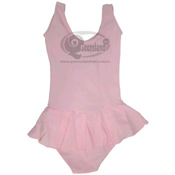

Para as crianças, as aulas de dança devem ser uma diversão!
As aulas de Baby Class e Pré Ballet são simples e descontraídas, com atividades lúdicas e recreativas, acompanhadas de músicas infantis e clássicas, a criança desenvolve os elementos básicos da dança como: postura, equilíbrio, flexibilidade, noção espacial, musicalidade, memória coreográfica, disciplina, criatividade, coordenação motora...
Nesta fase a criança tem seu primeiro contato com a técnica do Ballet Clássico, onde ela aprende, lentamente e gradativamente, os passos, posições e terminologias mais básicas da dança clássica.
UNIFORME: Collant com saiaInfantil, meia-calça, sapatilha
, rede e faixa para o cabelo
. COR: Rosa